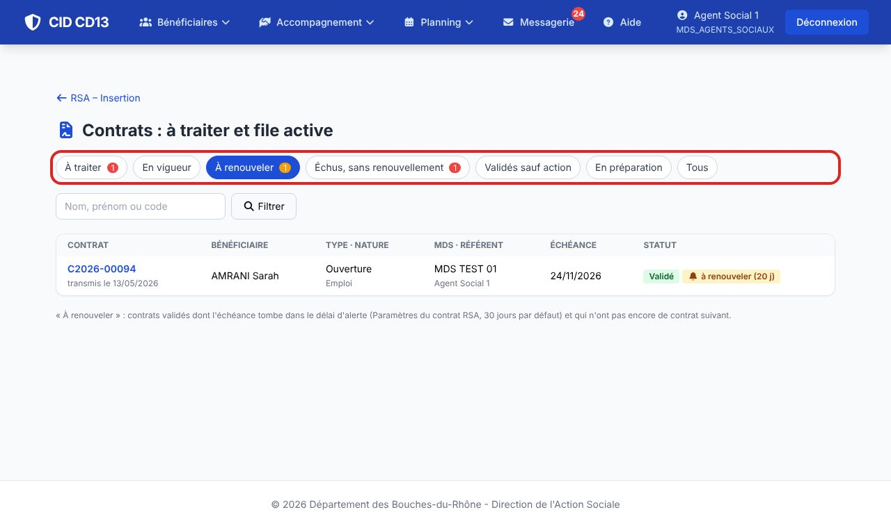
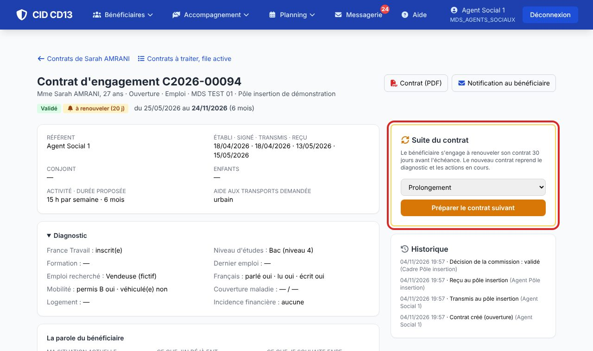
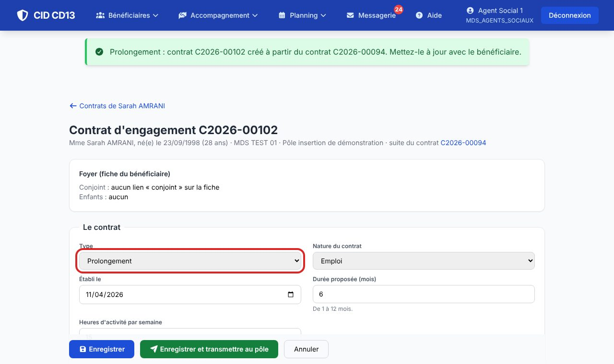
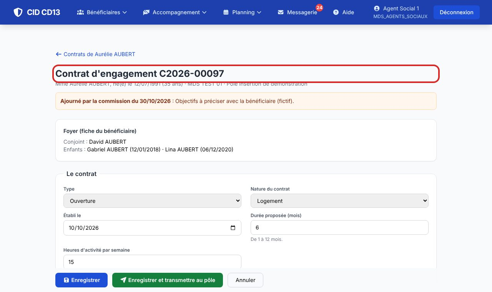

1Repérer les échéances

- À renouveler : contrats validés qui se terminent dans les 30 jours (réglable) et n'ont pas encore de suite.
- Échus, sans renouvellement : la date de fin est passée. Validés sauf action : contrats de 3 mois en cours.
- La tuile du module donne les mêmes compteurs.
2Préparer le contrat suivant


- Sur le contrat en cours, choisissez prolongement ou rétablissement, puis Préparer le contrat suivant.
- Le nouveau contrat reprend le diagnostic, et les souhaits du contrat précédent deviennent « ce que j'ai déjà fait ». Les actions en cours sont reprises.
3Reprendre un contrat ajourné

- Un contrat ajourné apparaît dans votre onglet À traiter, avec le motif de la commission : complétez-le et transmettez-le de nouveau.
Bon à savoir
- Dès qu'un contrat suivant existe, l'alerte du contrat précédent disparaît.
Et ensuite ?
Cliquez sur une image pour l'agrandir. Le cadre rouge montre où cliquer ou quoi remplir. Toutes les données affichées sont fictives.